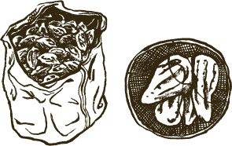
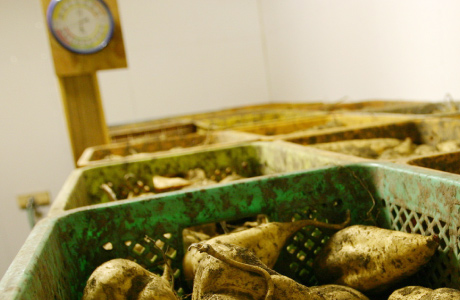
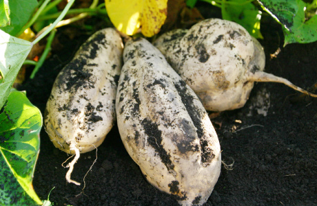
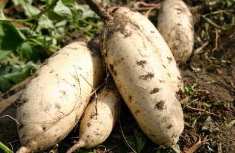
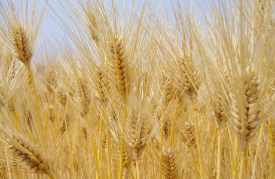

旭万年，
是由亲手栽培的甘薯作为原料酿造而成的。

種

作为种子的甘薯在储藏库里被精心管理，
作为种子的甘薯在储藏库里被精心管理，
待到出芽时进行采苗。
这是制作萬年烧酒的起点。
种植原料甘薯所用的种子甘薯，在酒窖里被精心保管。在每年田地里收获的所有甘薯中挑选最适合的甘薯，保管在温度和湿度被严密控制的储藏库中。
土

虽然贫瘠的土地也可以种植甘薯，
虽然贫瘠的土地也可以种植甘薯，
但是我们在土地的挑选上也下了很大功夫。
甘薯这种农作物因为可以在贫瘠的土地中种植，所以以前作为救灾救荒的粮食被人重视。但是渡边酒造场坚持用肥沃的土地种植甘薯。虽然原先多是在贫瘠的土地种植，但是作为酿酒原料，充分而适度的肥料是必不可少的。
繁

将农药量维持在最低限度。
将农药量维持在最低限度。
因为纯天然所以叶子经常被虫子吃食。
虫子吃食甘薯的叶子，自然对种植出的甘薯的品质有所影响，但是渡边酒造场仍旧为了保证原料的安全和安心，几乎不使用任何农药。请看这是在苗圃被虫子吃食的甘薯的叶子。

穫

从种苗开始，历经一百八十日。
从种苗开始，历经一百八十日。
收获作业也全部由酒窖员工亲自执行。
掘出土地中已成熟的甘薯，是最高兴的时刻。
通常，甘薯从种植到收获基本上是一百天左右。但是渡边酒造场需要收获肥硕的甘薯以作为原料，所以延长了种植时间，种植期间在一百八十日左右。此时的甘薯吸收了更多的养分。
芋

黄金千贯(Kogane Sengan)

大地之梦(Daichi No Yume)
我们亲自培育2种甘薯作为原料，分别是「黄金千贯(Kogane Sengan)」和「大地之梦(Daichi No Yume)」。
在本酒造场，作为烧酒原料的两大代表品种「黄金千贯(Kogane Sengan)」和「大地之梦(Daichi No Yume)」都在酒窖所属的耕地种植，并进行管理和处理以备使用。
所有酿酒原料均使用国产大麦品种。

“麦麦万年”是使用宫崎产大麦「Nishi No Hoshi」酿造而成的。
双棱大麦「Nishi No Hoshi」是专门为酿造大麦烧酒而开发出的品种。精选优质麦苗，最适合制造烧酒。在九州各县都有生产。本酒造场酿造的“麦麦万年”使用的是宫崎县产的「Nishi No Hoshi」。

创始人的梦想，历经三代终于酿造而成的“万年星”。原料为爱媛县产去壳大麦「Mannenboshi」。
创始人社长渡边寿贺市曾经说过：“希望能有一天用故乡爱媛县所产的原料酿酒。”2004年偶然的机会，爱媛县诞生了一种新品种大麦，就是名为「Mannenboshi」的去壳大麦。渡边家子孙三代及时用这种大麦进行了蒸馏试验，最终酿出了香味纯正而浓厚的商品“万年星”。创始人的梦想终于得以实现。